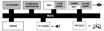
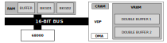
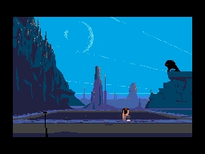

This article is part of a study about the ports of Another World. It is highly recommended to read Another World 101 before reading this.
The development of the MegaDrive/Genesis started right after Sega shipped its "Master System" in 1987. At the time, Sega's goal was to produce something to outperform NEC's PC Engine and Nintendo's Famicom.
Lead by Masami Ishikawa, the R&D team took only a year to come up with a 16-bit system. Launched on October 29, 1988 in Japan, the console did not do well, reportedly selling 400,000 units in its first year. Despite the release of numerous peripherals and being one whole generation ahead of Nintendo's NES, the MegaDrive failed to meet its audience.
Similarly, the US (January 1989) and European (September 1990) release were disappointing[1]. The salvation came in mid-1990 when Tom Kalinske became CEO of Sega America. Price cut, dedicated US development team, aggressive TV advertising campaign ("Genesis does what Nintendon't"), and replacing the bundled game Altered Beast with Sonic the Hedgehog sent the Genesis at the top of the charts.
Combined to a late Nintendo SNES and a struggling NEC TurboGrafx-16, Sega ended up controlling 65% of the 16-bit console market by January 1992 and outsold Nintendo four Christmas seasons in a row from 1990 to 1994. The game console turned out to be a smash-hit, selling 39.7 million units worldwide[2].
The Sega MegaDrive/Genesis. Photo credit: Wikipedia.
On the tech side, the Genesis features an impressive Motorola 68000 (7.61MHz), up to 8MiB ROM cartridges, 64KiB RAM, 64 KiB VRAM, a Video Display Processor ASIC (13 MHz), and a Z-80 (3.58 MHz) with 8KiB for audio controlling a TI 76489 and a YM 2612.

The component in charge of generating the video signal is called the VDP (Video Display Processor). It is the owner of the VRAM, a DMA controller and the CRAM where are stored the palettes.
Notice how the 68000 CPU cannot address the VRAM, it can only "talk" to the VDP via registers mapped into RAM. Data transfer is usually done with the VDP's DMA which has access to both RAM and VRAM. The VDP also have registers to allow VRAM R/W operations but they are quite slow.
The 68000 is stopped during a VDP's DMA transfer but the Z-80 can keep on operating as long as it does not access the RAM.
The DMA is quite fast during BLANK, operating at double the tightest possible 68000 loop. It is as fast as the 68000 during active scan.
- Genesis Developer Manual
The color system is alike the Atari ST with 3-bit per channel totaling 9-bit per color.
|
|
|
The VDP is the ASIC graphic powerhouse of the system. It is based on a sprite engine, which means there is no framebuffer. It works with four layers[3] called Scroll B, Scroll A, Windows, and Sprite.
Scroll A and Scroll B are scrollfields. They can be larger than the screen and moved independently in order to create parallax. Scroll A can also be used as a "Window" which is not scrollable and therefore well-suited to display HUD elements.
All layers elements use 4-bit indexes into their layer's palette (therefore, there are four palettes in total). A palette index 0 is always considered transparent in all four palettes. This gives 15 colors per layer[4]. All palettes are stored in 128 bytes called CRAM.
When the VDP generates scanlines for the TV, for each pixels, a system of priority tells in which order layers should be sampled. There is not support for blending (translucency) between layers but transparency can be done (using index 0). An handy analogy to understand priority for now is to simply think of it as a Z component with ScrollB being in the back and Sprite being in the front. As long as the VDP hits transparent pixels, it keep on going into the next layer.
Scrollfields are made of "Cells" which are 8x8 tiles. The layout of a cell is 32 bytes setup as 8 nibbles lines.
CELL in VRAM (64 nibbles):
==========================
WORD | WORD | WORD | WORD |
-----------------------------------------------------
BYTE | BYTE | BYTE | BYTE | BYTE | BYTE | BYTE | BYTE
-----------------------------------------------------
0 0 F F F F 0 0 0 F 0 0 0 0 F 0
F 0 F 0 F 0 0 F F 0 F 0 F 0 0 F
F 0 0 0 0 F 0 F F 0 F F F 0 0 F
0 F 0 0 0 0 F 0 0 0 F F F F 0 0
Screen (8 lines of 8 pixels):
=============================
0 0 F F F F 0 0
0 F 0 0 0 0 F 0
F 0 F 0 F 0 0 F
F 0 F 0 F 0 0 F
F 0 0 0 0 F 0 F
F 0 F F F 0 0 F
0 F 0 0 0 0 F 0
0 0 F F F X 0 0
The content of a scrollfield is set by entries in its "Nametable"[5].
The sprite layer can display up to 80 sprites, independently of the two Scrolls content. Sprites can be larger than Cells, from 8x8 up to 32x32. The properties (position in a virtual 512x512 space, priority, and much more) of a sprite are commanded by an entry in a "Sprite table"[6].
Two modes are available called"H32" 32x28 cells (256x224 pixels) and "H40" 40x28 cells (320x224 pixels).
There is a difference between American TVs and European TVs. PAL has 576 visible lines while NTSC has 486 visible lines. The Genesis provisioned for this by providing a PAL mode with 30 horizontal cells (two more than NTSC's 28). The extra cells allowed to avoid big black borders on top and bottom of the screen. This was however a significant burden on developer to handle and they never bothered as far as I know.
| NTSC | PAL (more vertical black borders) |
To add insult to injury, early MegaDrive titles such as "Sonic, the Hedgehog" ran 17% slower on European consoles (even the music was slower). Developers in Japan and USA did not follow best practices and assumed the VBLANK signal used to measure time triggered every 16 ms. Since PAL refreshes at 50Hz while NTSC refreshes at 60Hz, a VBLANK does not represent 16ms but 20ms in Europe. The gameplay of these early titles was way off.
The Genesis port was the first in this series what was not done by Delphine Software. Interplay took care of many ports besides the Genesis, including the Macintosh, Super Nintendo and even Apple IIGS.
The task to port to Sega's machine landed on Michael Burton while Rebecca Heineman took care of the three other platforms. Since the Genesis is based on a 68000, a lot of the code from the Atari ST version could be re-used to implement the VM.
For the North American release, Interplay was concerned customers would be confused with Another World, the TV series[7]. The game was renamed "Out Of This World" for this market. Amusingly a TV series also named "Out Of This World" came out in 1991[8] but too late to change the game name again.
Interplay was also concerned the game box was too beautiful so they fixed the glitch.
Michael did not immediately respond to email inquiries so the rest of this article is based on observations done with GenS and Exodus emulators as well as disassembly outputs.
The
Genesis Software Manual[9] is a beauty which goes as far as carefully documenting DMA timings. After studying it, I was hoping to see the VDP used extensively since it excels at the two things Another World needs the most.
The VDP could have been used its DMA FILL[10] capability to DRAW polygons alike the Amiga Blitter. The DMA COPY[11] function was a perfect match to implement the VM COPY opcode. Unfortunately a few details did not work out.
First there is the sheer volume of VRAM needed. Hosting all four 320x200 framebuffers in VRAM is too much for 64KiB. This was not a showstopped since the framebuffer could have been letter-boxed and the resolution lowered to reduce VRAM consumption.
Second, the DMA FILL write operations are done on a 16-bit granularity which is fast but when individual nibble were needed, reading from VRAM with VDP registers, masking and writing back would have sinked the framerate.
Finally, the layout of Cells is not compatible with the way DMA FILL works. Another World needs to write long lines of pixels but cell line are broken down in two words (4 bytes) with a stride of 28 bytes. Since DMA FILL has no stride, this would have required many requests and the overhead would have killed the framerate.
This impossible design was confirmed by tracing VDP Register #17[12] in Exodus emulator which showed DMA COPY and DMA FILL are never used.
With no way to build the engine around the VDP rendering into its VRAM, Another World went for a 68000 heavy approach similar to what we saw with the Atari ST.
Three framebuffers, the two BKGD and a "working" buffer are kept in RAM. The 68000 perform all rendering and copy operations there.
As soon as a frame is completed, it is DMA COPYed to the unused double buffer in VRAM. On the next VBLANK, the "active" VRAM buffer are flipped.
All layers are disabled except for Scroll A as verified via Gens. The Scroll A origin is modified based on which of the double buffer was written last.
Compared to the Atari ST, the only optimization seems to be in the implementation of COPY which now uses movem instruction. The performance gain is unclear (5%?).

There are no framebuffers to draw to in the VDP VRAM but there is a way to fake it by covering the entire screen with Cells and translating screenspace coordinates to cell coordinates.
For a pixel perfect port, mode H40 could have been used to get a resolution of 320x224 pixels. Removing three lines of Cells would have resulted in 320x200 which is exactly what was needed.
At 320x200, a framebuffer would be 320 * 300 / 2 = 32,000 bytes. If we take a look at the bandwidth of the VDP DMA[13], we see that it would takes 32000 / 11556 = 2.7 frames on an NTSC system and 32000 / 21654 = 1.4 frames on a PAL system.
DMA bandwidth, bytes per frame :
===============================
Frequency Resolution On VBLANK On Active Display Total
--------------------------------------------------------------------------
60 Hz 256 x 224 6118 3584 9702
320 x 224 7524 4032 11556
50 Hz 256 x 224 14329 3584 17913
320 x 224 17622 4032 21654
256 x 240 11753 3840 15593
320 x 240 14454 4320 18774
Trivia: Notice how a PAL system is superior to an NTSC when it comes to transferring from RAM to VRAM. The longer VBLANK is an advantage here. That is why most demo group work with PAL MegaDrive instead of NTSC Genesis.
Looking at a "missed vsync vs framerate" chart and factoring in VM game logic and polygon rendering on top of transferring from RAM to VRAM, we see the game would ran between 12-15 fps on NTSC which was unacceptable.
Framerate for # missed VSYNCs: ============================== Missed VSYNCs : 0 1 2 3 4 5 6 7 ------------------------------------------------------- NTSC Framerate : 60 30 20 15 12 10 8 7 PAL Framerate : 50 25 16 12 10 8 7 6
To reduce bandwidth stress, the VDP is set in mode "H32" with a resolution of 32x28 Cells. Some columns and line are set up to use a Black Cell and never touched again. These extra black Cells reduce resolution further and also preserve the game intended aspect ratio of 1.3.
Only 28x22 Cells are actively drawn to which result in a resolution of 224x176 and a framebuffer 224 * 176 / 2 = 19,712 bytes.
This lower resolution made copy, fill, and draw polygon op code faster to execute but also reduced the cost of transferring from RAM to VRAM. On an NTSC system, 19,712 / 9702 = 2 frames missed. Add an extra one for draw/copy/fill and you end up with 15-12 fps which seems to be confirmed by actual footage[14].
On a PAL system, transfer cost is 19712 / 17913 = 1.1 frame. This likely resulted in 2 vsync miss and a better framerate than NTSC, close to 16-12fps.
Notice the added facial features and how Lester seems to look more worried. There is a clipping bug at the bottom (Lester right hand). Colors depth difference is noticeable but not an issue.
Something that may have tipped your curiosity earlier when describing the video system is that the VDP supports per-pixel transparency.
This is done by always treating color index zero on all layers as transparent. This effectively reduce the number of colors available per-layer to 15. But Another World needs 16. This is a problem.
I imagined a solution using Plane B and filling it with a repeated Cell set to color index 0x01. When a palette is uploaded, color 0 from Plane A is also copied into palette of Plane B at index 0x01. Rendition could then proceed as normal. Since Plane B is behind Plane A, any color set to 0x0 would have been instead be set to Plane B color 0x1.
It turns out that none of this was needed. Running the game with Exodus and looking at palettes in real-time, I noticed that all palettes use the same BLACK color at index 0. All the developer had to do was set the BACKGROUND COLOR (the color to use when all layers are transparent) to black and be done with it.
This was without a doubt the most challenging port studied so far. Despite a powerful CPU and VDP, the MegaDrive seemed to struggle during RAM/VRAM transfer which to be fair was never designed to be taken to fullscreen level.
Maybe something could have been done with a system of Cell caching in order to transfer only the dirty ones to reduce the volume of data transfered but it is likely the developer was not allowed a lot of time to tune the port.
The lower resolution was not really noticeable but the cells intentionally left black added borders. It was not too much of a problem on an NTSC system but on a PAL TV the black cells of the framebuffer added even more to the "natural" black borders.
Did player of the time really care? I don't think so. StarFox on SNES suffers the same framerate/extra black borders but is remembered as a great game. I believe so is Out of This World/Another world on Genesis/MegaDrive.
 Contrary to the PC version, this time the moon is round!
Another World on Super Nintendo.
| ^ | [ 1] | Wikipedia: Sega Genesis, Launch |
| ^ | [ 2] | Mega Drive sales figures - an update |
| ^ | [ 3] | Genesis Software Manual: VDP 315-5313 |
| ^ | [ 4] | There are many tricks to display more colors such as changing palette on HBLANK or streaming colors to the BACKGROUND REGISTER but these are not relevant here. |
| ^ | [ 5] | VDP, Planes Nametables |
| ^ | [ 6] | VDP, Sprite Table |
| ^ | [ 7] | Wikipedia: Another World TV Series |
| ^ | [ 8] | Wikipedia: Out of This World TV Series |
| ^ | [ 9] | Genesis Software Manual |
| ^ | [10] | VDP DMA FILL |
| ^ | [11] | VDP DMA COPY |
| ^ | [12] | VDP Registers 0x17 |
| ^ | [13] | segaretro.org, MegaDrive DMA Bandwidth |
| ^ | [14] | Out of This World on US Model 2 Sega Genesis through S-Video |